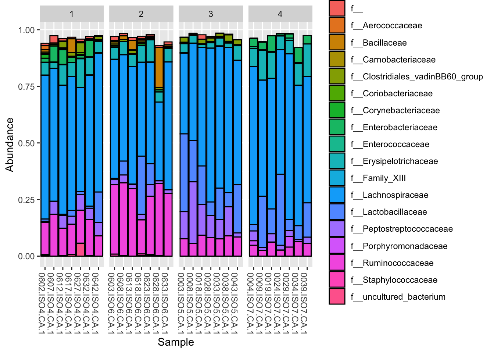
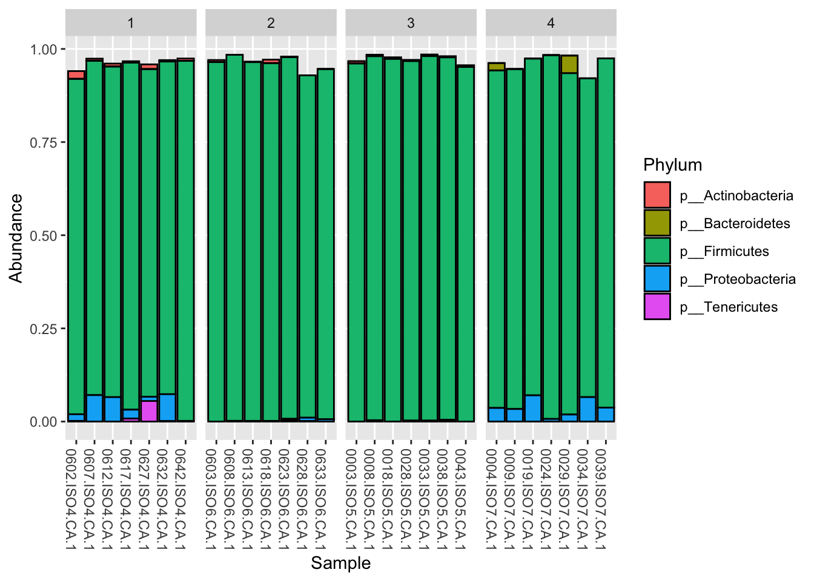

Chapter 3 Third break-out room
3.1 Barplot
ps1.com <- microbiome::transform(ps1, "compositional")
ps1.com.fil = filter_taxa(ps1.com, function(x) sum(x) > .01, TRUE)
ps.phylum = tax_glom(ps1.com.fil, taxrank="Family", NArm=FALSE)
plot_bar(ps.phylum, fill="Family") + facet_wrap(~Pen, scales= "free_x", nrow=1)
Try how filtering influence the barplot
3.2 Dendrogram
d <- distance(ps1, method = "jaccard", binary = TRUE)
#d <- distance(ps1, method = "wunifrac") # distance
hpws <- hclust(d, method = "ward.D2")
# add color
library(dendextend)
dend <- as.dendrogram(hpws)
colors_to_use <- as.numeric(meta$Pen)
colors_to_use <- colors_to_use[order.dendrogram(dend)]
labels_colors(dend) <- colors_to_use
plot(as.dendrogram(dend, hang = -1, cex = 0.6)) 
Try how cluster type influence the dendrogram